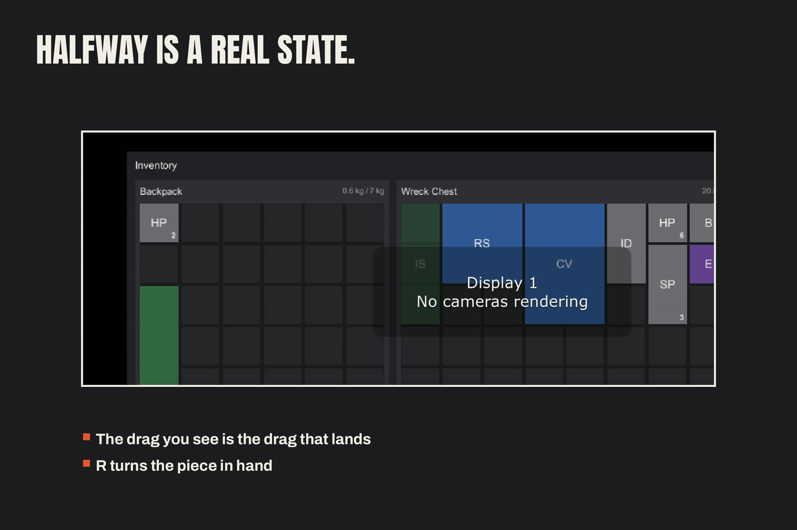

Drag-and-Drop and Click-Move
All pointer interaction lives in one component, the
InventoryDragController, which the screen factory creates and wires
for you. Every gesture resolves through the grid's validated
operations — a refused drop changes nothing.

Gestures
- Drag — press an item and drag. A ghost follows the pointer at the item's true footprint size (rotated shape included), tinted by rarity, with a count badge on stacks. The source item dims while dragged.
- R while dragging — rotates the ghost. Dropping commits the rotated placement if it fits at the target cell.
- Shift-drag — carries half the stack, rounded up. The drop
resolves through the same split path as the model's
SplitStack: the carried half moves; the rest stays. - Click — selects an item (highlight + a status line naming what to do next). Click a cell — in any container — to move it there. Click the item again or press Escape to clear.
- R with a selection — rotates the selected item in place; if it cannot rotate there, the status line says so.
Drop resolution
A drop walks from the pointer's raycast target up to the grid view
under it and converts the pointer position to a cell. Cross-container
drops place at the target cell when the whole stack fits there; when
only part fits (space or weight), exactly the fitting part moves and
the status line reports it; when nothing fits, the status line gives
the reason and the item stays in the source. Same-grid drops are a
Move — onto an occupied region they are refused, item unmoved.
Refusal language
Refusals are player-readable sentences, never codes: "That does not fit there." · "Too heavy for the Backpack." · "No room in the Backpack." · "Only 3 fit in the Backpack." The screen's status line is the single surface for all of them.